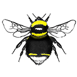
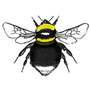
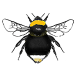
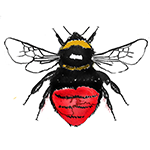
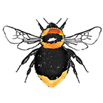

Cuckoo Bumblebees


Cuckoo bees don't have workers so you're either going to spot the queens or males. Queens appear later in the year than true bumblebee queens as they wait to sneak into a nest until it is already established. They won't have pollen baskets when most queens do. They are maked very like their host species so some careful examination is needed to tell them apart. Here are a list of the cuckoo species we have here. Many are rare or endangered and one hasn't been recorded since 1926- vestalis. You might be the one to find it!
| Image | Bumblebee Name | Common Name | Tail | Banding | Queen size | Male | Host Species | Status |
|---|---|---|---|---|---|---|---|---|
 |
Bombus bohemicus | Gypsy Cuckoo Bee | White | Yellow band on top of thorax, small yellow band at top of abdomen.Small yellow sections above tail | Large - up to 19mm | Similar markings to the queen, yellow band at bottom of thorax extends to abdomen | B. lucorum | Not Common |
|  | Bombus vestalis | Southern Cuckoo Bee | White | Yellow band on top of thorax.Small yellow sections above tail | Very large- up to 21mm | Same markings as queen but also has a yellow band on bottom of thorax/top of abdomen | B. terrestris | Rare |
|  | Bombus barbutellus | Barbut's Cuckoo Bee | White | Yellow band on top of thorax, yellow band at bottom of thorax and greyish band at top of abdomen.Small yellow sections above tail Bit of yellow on face | Medium-Large up to 18mm | Male the same but instead of greyish band he has a yellow band | B. hortorum | Endangered |
|  | Bombus sylvestris | Forest Cuckoo Bee | White- buff coloured at the tip, strongly curled under | Yellow band on top of thorax | Small - up to 16mm | Yellow bands; one on top of thorax and one at the bottom. reddish tip at very end of white tail | B. pratotrum | Common |
|  | Bombus rupestris | Red-tailed Cuckoo Bee | Large red tail | Greyish band at top of thorax. Also dark wings | Very large- up to 22mm | Black with red tail | B. lapidarius | Rare |
|  | Bombus campestris | Field Cuckoo Bee | Yellow/ginger | Two gingerish-yellow bands on thorax | Medium-large - up to 18mm | same as queen, a lot of the tail is coloured | B. pascuorum | Not Common vulnerable |